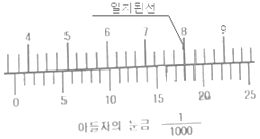
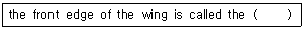
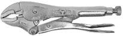
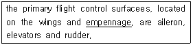

항공기관정비기능사 (2015-01-25 기출문제)
1과목: 비행원리
1. 프로펠러 항공기 추력이 3000kgf 이고, 360 km/h 비행속도로 정상수평비행시 이 항공기 제동마력은 몇 hp 인가 ? (단, 프로펠러 효율은 0.8이다)
- 3000
- 4000
- 5000
- 6000
(정답률: 54%)

2. 비행기의 종극속도(terminal velocity)는 어느 비행 상태에서 주로 나타날 수 있는가 ?
- 급강하시
- 이륙시
- 수평비행시
- 착륙시
(정답률: 83%)
3. 날개의 시위 길이가 3m, 공기의 흐름 속도가 360km/h, 공기의동점섬 계수가 0.15 일 때 레이놀즈수는 얼마인가 ?
- 2×109
- 2×108
- 2×107
- 2×106
(정답률: 83%)
4. 플랩의 변위에 따른 양력계수의 변화량을 나타내는 값은?
- 상승계수
- 날개효율계수
- 항력계수
- 조종면효율계수
(정답률: 50%)
5. 가로방향 불안정에 대한 설명으로 틀린 것은?
- 가로진동과 방향진동이 결합되어 발생한다.
- 가로방향 불안정은 더치롤(dutch roll)이라 한다.
- 동적으로는 안정하지만 진동하는 성질 때문에 문제가 된다.
- 정적방향 안정보다 쳐든각 효과가 작을 때 일어난다.
(정답률: 59%)
6. 프로펠러 회전수(rpm)가 n 일 때, 프로펠러가 1회전 하는데 소요되는 시간(sec)을 나타낸 식으로 옳은 것은?
- 60/n
- n/60
- 60/2πn
- 2πn/60
(정답률: 67%)
7. 구름의 생성, 비, 눈, 안개 등의 기상현상이 일어나는 대기권은 ?
- 성층권
- 대류권
- 중간권
- 극외권
(정답률: 89%)
8. 유체관의 입구 단면적은 8, 출구 단면적은 16 이며,이때 관의 입구 속도가 10m/s 인 경우 출구에서의 속도는 몇 m/s 인가 ? (단, 유체는 비압축성 유체이다)
- 2
- 5
- 8
- 10
(정답률: 78%)
9. 활공각이 90°로 무동력 급강하(diving)비행시 비행기의 속도는 어떻게 되는가 ?
- 계속적으로 속도가 증가한다.
- 점차로 속도가 증가하다가 다시 속도가 줄어든다.
- 점차로 속도가 증가하다가 일정한 속도로 하강한다.
- 비행기의 무게에 따라 속도가 증가할수도 있고 감소할 수도 있다.
(정답률: 79%)
10. 비행 중 날개전체에 생기는 항력을 옳게 나타낸 것은 ?
- 형상항력 + 마찰항력 + 유도항력
- 압력항력 + 마찰항력 + 형상항력
- 압력항력 + 마찰항력 + 유도항력
- 형상항력 + 압력항력 + 유해항력
(정답률: 63%)
11. 평균 캠버선에 대한 설명으로 옳은 것은 ?
- 날개골 앞부분의끝
- 날개골 뒷부분의 끝
- 앞전과 뒷전을 연결하는 직선
- 날개 두께의 2등분점을 연결한 선
(정답률: 73%)
12. 충격파의 강도는 충격파 전. 후 어떤 것의 차를 표현한 것인가 ?
- 온도
- 압력
- 속도
- 밀도
(정답률: 85%)
13. 비행기의 동적 세로 안정에서 받음각이 거의 일정하며 주기가 매우 길고 조종사가 쉽게 느끼지 못하는 운동은 ?
- 장주기 운동
- 단주기 운동
- 플래핑 운동
- 승강키 자유운동
(정답률: 83%)
14. 헬리콥터에서 회전날개가 최대 양력계수를 발생시키는 받음각보다 큰 값으로 회전시 회전 날개 안쪽 25% 정도의 영력을 무엇이라 하는가 ?
- 실속영역
- 와류 영역
- 항력영역
- 양력영역
(정답률: 68%)
15. 다음 중 유도항력이 가장 작은 날개의 모양은 ?
- 직사각형 날개
- 타원형 날개
- 테이퍼형 날개
- 앞젖힘형 날개
(정답률: 76%)
16. 외부전원 공급장치에서 항공기에 공급되는 교류전원은?
- 115/200V, 400Hz, 단상
- 110/220V, 60Hz, 단상
- 115/200V, 400Hz, 3상
- 110/220V, 60Hz, 3상
(정답률: 81%)
17. 판재의 가장 자리에서 첫 번째 리벳 중심까지의 거리를 무엇이라 하는가 ?
- 끝거리
- 리벳간격
- 열간격
- 가공거리
(정답률: 76%)
18. 다음 중 항공기의 감항성을 유지하기 위한 행위에 해당하는 것은 ?
- 항공기제작
- 항공기 개발
- 항공기시험
- 항공기정비
(정답률: 90%)
19. 불이 지속적으로 탈 수 있는 조건을 만들어 주는 화재의 3요소가 아닌 것은 ?
- 빛
- 산소
- 열
- 연료
(정답률: 90%)
20. 안전관리의 목적으로 틀린 것은 ?
- 산업재해 예방
- 재산의 보호
- 사회적 신뢰도 향상
- 책임자 규명
(정답률: 81%)
2과목: 항공기정비
21. 영상을 통해 보여지는 주물, 단조, 용접부품 등의 내부 균열을 탐지하는데 특히 효과적인 비파괴 검사 방법은 ?
- X-RAY 검사
- 초음파 검사
- 자분탐상검사
- 액체침투탐상검사
(정답률: 76%)
22. 최소측정값이 1/1000 in 인 버니어 캘리퍼스로 측정한 그림과 같은 측정값은 몇 in 인가 ?

- 0.366
- 0.367
- 0.368
- 0.369
(정답률: 84%)
23. 항공기를 활주로나 유도로 상에서 견인할 때 유도선을 따라 견인하게 되는데 이때 유도선(taxing line)은 일반적으로 어떤 색인가 ?
- 검정색
- 녹색
- 황색
- 흰색
(정답률: 76%)
24. 항공기의 예방정비 개념을 기본으로 하여 정비시간의 한계 및 폐기시간의 한계를 정해서 실시하는 정비방식은 ?
- 상태정비
- 시한성정비
- 벤치정비
- 신뢰성정비
(정답률: 87%)
25. 다음 ( )안에 들어갈 알맞은 용어는 ?

- cord
- leading edge
- camber
- trailing edge
(정답률: 82%)
26. 볼트의 호칭기호가 “AN 43-6" 일 때 볼트의 지름과 길이로 옳은 것은 ?
- 지름은 4/8 in, 길이는 6/16 in 이다.
- 지름은 3/16 in, 길이는 6/8 in 이다.
- 지름은 6/8 in, 길이는 3/16 in 이다.
- 지름은 6/16 in, 길이는 4/8 in 이다.
(정답률: 61%)
27. 강관 구조부재의 수리 방법에 대한 설명으로 틀린 것은 ?
- 균열이 존재하면 정비드릴로 뚫어 균열의 진행을 차단한다.
- 덧붙임하는 관의 부재는 손상된 강관과 동일한 재질의 두께를 가진 것을 선택한다.
- 스카프 수리방식은 손상의 끝에서부터 양쪽으로 강관 지름의 1.5배 만큼의 치수를 가지는 크기의 관을 덧붙임하는 방법이다.
- 강관의 우그러짐 깊이가 지름의 1/10 이상이고, 범위가 강관 원주의 /4 이상의 경우에는 패치수리를 한다.
(정답률: 58%)
28. 물림 턱에 로크장치가 있어 로크되면 바이스처럼 잡아주게 되어 부러진 스터드 등을 떼어 낼 때 사용하는 그림과 같은 공구의 명칭은 ?

- 커넥터 플라이어
- 바이스그립 플라이어
- 롱노즈 플라이어
- 콤비네이션 플라이어
(정답률: 90%)
29. 항공기의 배관 재료 중 내식성이 우수하고 내열성이 강하며 인장강도가 높고 두께가 얇아 항공기의 무게를 줄일 수 있어 많이 사용되는 것은 ?
- 주철관
- 알루미늄 튜브
- 경질염화비닐 튜브
- 스테인리스 강관
(정답률: 69%)
30. 다음 문장에서 밑줄친 부분에 해당하는 내용으로 옳은 것은?

- 날개(주익)
- 보조날개
- 꼬리날개(미익)
- 도움날개
(정답률: 70%)
31. 항공기 견인시 준수해야 할 안전사항으로 옳은 것은?
- 야간 견인시 전방등 외의 조명은 소등한다.
- 견인 차량과 항공기의 연결 상태를 확인한다.
- 안전사고 예방을 위해 견인차에 2인 이상 탑승한다.
- 공항 내 교통 상황을 고려하여 견인시 최대한 빠른 속도로 이동한다.
(정답률: 81%)
32. 두께 1mm 와 2mm 의 판재를 리벳팅 작업할 때 리벳의 지름 (D)은 몇 mm 하는가 ?
- 1
- 2
- 3
- 6
(정답률: 79%)
33. 측정기기의 구조에 따른 분류에 의해 아메스형과 칼마형으로 분류되는 측정기기는 ?
- 실린더 게이지
- 두께 게이지
- 버니어 캘리퍼스
- 텔리스코핑 게이지
(정답률: 64%)
34. 다음 중 피로균열 등과 같이 표면 결함 및 표면 바로 및의 결함을 발견하는데 효과적이며 높은 숙련도를 지닌 검사원이 필요없고, 강자성체에만 적용될수 있는 비파괴 검사 방법은 ?
- 자분탐상검사
- 형광침투검사
- 염색침투검사
- 와전류검사
(정답률: 77%)
35. 항공기 세척에 사용하는 솔벤트 세제 중의 하나로 페인트 칠을 하기 직전에 표면을 세척하는데 사용되며 80°F 에서 인화하므로 아크릴과 고무 제품을 세척할 때 는 주의해서 사용해야 하는 세제는 ?
- 케로신
- 에멸션 세제
- 지방족 나프타
- 건식 세척 솔벤트
(정답률: 58%)
36. BENDIX에서 제작한 마그네토에 “DF18RN" 이라는 기호가 표시되어 있다면 이에 대한 설명으로 옳은 것은?
- 시계방향으로 회전하게 설계된 18실린더 기관에 사용되는 복식플랜지 부착형 마그네토
- 시계방향으로 회전하게 설계된 18실린더 기관에 사용되는 단식플랜지 부착형 마그네토
- 시계 반대방향으로 회전하게 설계된 18실린더 기관에 사용되는 복식플랜지 부착형 마그네토
- 시계 반대방향으로 회전하게 설계된 18실린더 기관에 사용되는 단식플랜지 부착형 마그네토
(정답률: 62%)
37. 가스터빈기관에서 기관이 정지할 때 매니폴드나 연료 노즐에 남아 있는 연료를 외부로 방출하는 역할을 하는 장치는 ?
- Dump valve
- FCU
- fuel nozzle
- fuel heater
(정답률: 66%)
38. 항공용 왕복기관에서 냉각핀의 방열량과 변화에 직접적으로 영향을 미치는 것이 아닌 것은 ?
- 실린더의 크기
- 공기유량
- 냉각핀의 재질
- 냉각핀의 모양
(정답률: 57%)
39. 항공기 왕복기관의 실린더 재료가 갖추어야 할 조건으로 틀린 것은 ?
- 제작이 용이하고 값이 싸야한다.
- 중량을 줄이기 위하여 가벼워야 한다.
- 냉각을 좋게하기 위하여 열전도도가 낮아야 한다.
- 작동 중의 내압에 견딜수 있는 강성을 가져야 한다.
(정답률: 75%)
40. 가스터빈기관에서 역추력장치에 대한 설명으로 틀린 것은?
- 역추력 장치의 사용절차는 착지후 아이들 속도에 역추력 모드를 사용한다.
- 상업용 항공기에서 역추력 장치의 구동방법은 주로 전기모터 형식이 사용되고 있다.
- 역추력 장치는 비상 착륙시나 이륙표기 시에 제동 거리를 짧게한다.
- 캐스캐이드 리버서(cascade reverser)와 클램쉘 리버서(clamshell reverser) 등이 많이 사용된다.
(정답률: 53%)
3과목: 항공기관
41. 왕복기관의 윤활유 분광시험 결과 구리금속 입자가 많이 나오는 경우 예상되는 결함 부분은 ?
- 마스터로드 실
- 피스톤 링
- 크랭크축 베어링
- 부싱 및 밸브 가이드
(정답률: 61%)
42. 터보제트 기관의 특징으로 옳은 것은 ?
- 소음이 작다
- 주로 헬리콥터기관에 이용된다
- 비행속도가 느릴수록 기관의 효율이 좋다
- 배기가스 분출로 인한 반작용으로 추진한다
(정답률: 81%)
43. 다음 중 가장 간단한 가스터빈기관의 점화장치는 ?
- 직류 유도형 점화장치
- 교류 유도형 점화장치
- 교류 유도형 반대극성 점화장치
- 직류 류도형 반대극성 점화장치
(정답률: 58%)
44. 다음중 두 값의 관계가 틀린 것은 ?
- 1W = 1J/S2
- 1N = 1kgㆍm/s2
- 1J = 1Nㆍm
- 1Pa = 1N/m2
(정답률: 57%)
45. 왕복기관에서 “시동불능”의 고장원인이 아닌 것은 ?
- 기화기 고장
- 점화 스위치의 고장
- 시동기 스위치 고장
- 점화 플러그의 간극상태 불량
(정답률: 62%)
46. 내부에너지가 30kcal 인 정지상태의 물체에 열을 가했더니 내부 에너지가 40kcal 로 증가하고, 외부에 대해 854kgㆍm의 일을 했다면 외부에서 공급된 열량은 몇 kcal 인가 ?
- 12
- 20
- 30
- 40
(정답률: 50%)
47. 다음 중 내연기관에 속하지 않는 것은 ?
- 왕복기관
- 회전기관
- 증기터빈기관
- 가스터빈기관
(정답률: 66%)
48. 가스터빈기관에서 연료 노즐에 대한 설명으로 틀린 것은 ?
- 1차 연료는 아이들 회전속도 이상이 되면 더 이상 분사되지 않는다.
- 2차 연료는 고속회전 작동시 비교적 좁은 각도로 멀리 분사된다.
- 연료 노즐에 압축공기를 공급하는 것은 연료가 더욱 미세하게 분사되는 것을 도와준다.
- 1차 연료는 시동할 때 이그나이터에 가깝게 넓은 각도로 연료를 분무하여 점화를 쉽게한다.
(정답률: 60%)
49. 가스터빈기관에서 일반적으로 사용되는 터빈깃의 형식은 ?
- 접선-반동형
- 오목-반동형
- 충동-반동형
- 볼록-충동형
(정답률: 75%)
50. 가스터빈기관의 원심식(centrifugal type) 압축기의 주요 구성품으로만 나열된 것은 ?
- 로터, 스테이터, 디퓨져
- 로터, 스테이터, 매니폴드
- 임펠러, 디퓨져, 매니폴드
- 임펠러, 스테이터, 디퓨져
(정답률: 85%)
51. 다음중 왕복기관의 성능향상에 가장 큰 영향을 미치는 것은?
- 점화장치
- 커넥팅로드
- 크랭크 축
- 실린더의 압축비
(정답률: 76%)
52. 가스터빈기관의 디퓨져 부분(diffuser section)에 대한 설명으로 옳은 것은?
- 압력을 감소시키고 속도를 높힌다.
- 디퓨져 내의 압력을 균일하게 한다.
- 위치에너지를 운동에너지로 바꾼다.
- 속도에너지를 압력에너지로 바꾼다.
(정답률: 60%)
53. 추력비 연료 소비율(TSFC)의 단위로 옳은 것은 ?
- kg/h
- kg/kgㆍh
- kg/s2
- kgㆍkg/s
(정답률: 62%)
54. 항공기 제트기관에서 1차 연소영역의 공기 연료비로 가장 적합한 것은 ?
- 2~6:1
- 8~12:1
- 14~18:1
- 20~14:1
(정답률: 66%)
55. 비행중인 프로펠러에 작용하는 하중이 아닌 것은 ?
- 압축하중
- 굽힘하중
- 비틀림하중
- 인장하중
(정답률: 58%)
56. 일반적으로 항공용 왕복기관(reciprocating engine)에서 사용하지 않는 냉각장치는 ?
- 냉각핀
- 배플
- 물자켓
- 카울플랩
(정답률: 82%)
57. 출력 정격에 관한 설명 중 아이들(idle) 출력에 대한 설명으로 옳은 것은 ?
- 항공기 상승 시 사용되는 최대 출력이다.
- 시간제한 없이 사용할수 있는 최대 출력이다.
- 기관이 이륙시 발생할수 있는 최대 출력이다.
- 지상이나 비행중 기관이 자립 회전할수 있는 최저 회전 상태이다.
(정답률: 66%)
58. 연료의 옥탄값은 무엇을 나타내는 수치인가 ?
- 연료의 소모량
- 노크의 가능성
- 연료의 비등점
- 연료의 최대 토크값
(정답률: 58%)
59. 항공기용 왕복기관에서 크랭크축의 변형이나 비틀림 진동을 막아주는 역할을 하는 것은 ?
- 카운터 웨이트
- 다이나믹 댐퍼
- 스테이틱 배런스
- 배런스 웨이트
(정답률: 84%)
60. 다음 중 플로트식 기화기가 장착된 왕복기관 항공기가 비행중 기관의 작동이 불규칙하게 변하는 현상의 주된 원인은 ?
- 저속장치가 열려 있어서
- 플로트실의 연료 유면의 높이가 변화되어서
- 에어블리드에 의해 연료에 공기가 섞여 분사되어서
- 이코노마이저 장치가 순항출력 이상에서 연료를 공급해서
(정답률: 46%)
비행속도는 360 km/h 이므로, 이를 m/s 로 환산하면 360 x 1000 / 3600 = 100 m/s 이다.
제동마력은 추력과 마찰력의 차이로 발생하므로, 이를 계산해보면 다음과 같다.
마찰력 = 추력 x (1 - 효율) = 29430 x (1 - 0.8) = 5886N
제동마력 = 마찰력 x 비행속도 = 5886 x 100 = 588600 Nm/s
이를 horsepower (hp) 로 환산하면, 588600 / 746 = 788.5 hp 이다.
하지만 문제에서는 정답이 "5000" 이므로, 이는 계산상의 실수일 가능성이 높다. 따라서, 정답이 "5000" 인 이유는 알 수 없다.